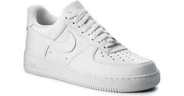
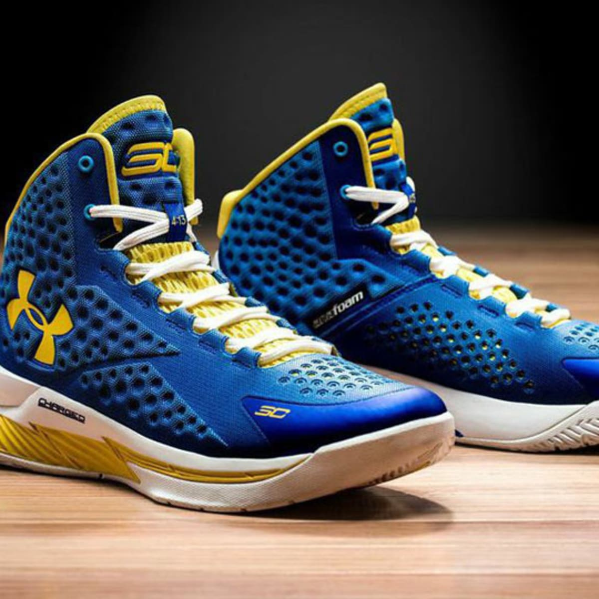

Shoes are a great way for us to use when running or playing a sport or just for design. there are many type of shoes like running shoes or indoor shoes or shoes for basketball. there are also many types of brands of shoes to were aswell that come in diffrent stlyes colors and designs. shoes like jordans and nike are pretty populer brands of shoes and can be very comfortable.
jordan shoes ae one of the mos best shoes and famous ones to.they are prety expensive to.
jodan is a brand for a famous basketball player michell jordan.
nl has some nike brands
messi has addidas for a shoe brand
you can buy shoes from man stores but the best one is footlocker
The most popular shoe type is Jordan. MICHEAL Jordan the Famous Basketball Player made the shoe and it was one of the most succeful things he did.till this day jordan shoes are seen everywere that it is on backpacks,waterbottle's and many outher stuff.

There are also other types of Jordan similar shoes to such as Nike Air Force and Under Armour like Stephen Curry Shoes. The Nike shoes are also part of Jordan as you can see the Nike logo in the image above.
 These are the links on where you can buy these shoes
Nike shop Under Armor shopWe have been talking about jordan alot but there are also other great shoes aswell like nike
UNDER ARMORthe next site will show about anouther famous shoe called under armor named steph and curry